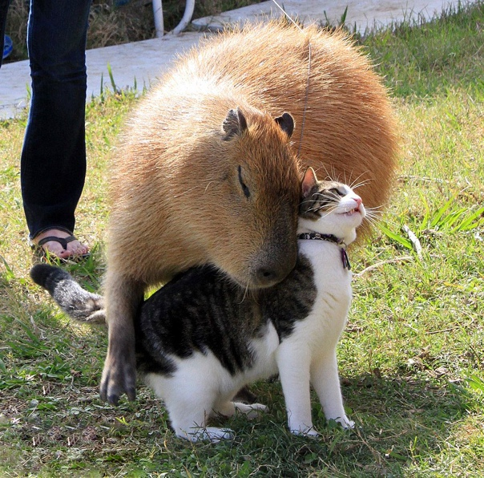

Капибара, или водосвинка (Hydrochoerus hydrochoeris) является родственницей всем известной морской свинки и напоминает ее увеличенную в десятки раз копию. Это самый крупный представитель отряда грызунов на планете. Длина ее тела более 1 метра, высота в холке — выше полуметра, а живая масса тела от 50 до 75 килограммов (рекордная живая масса — 91 килограмм). Самки крупнее и тяжелее самцов. Своими размерами капибара напоминает молодую домашнюю свинью. Голова крупная, морда почти квадратная, ноздри широко расставлены, глаза и уши небольшие. В ротовой полости находится 20 зубов, резцы оранжевого цвета и растут всю жизнь. Тело бочкообразной формы, хвост рудиментарный. На передних конечностях по 4 пальца, на задних по 3 пальца. Между пальцами лап расположены плавательные перепонки. Задние конечности длиннее передних.

2 страница